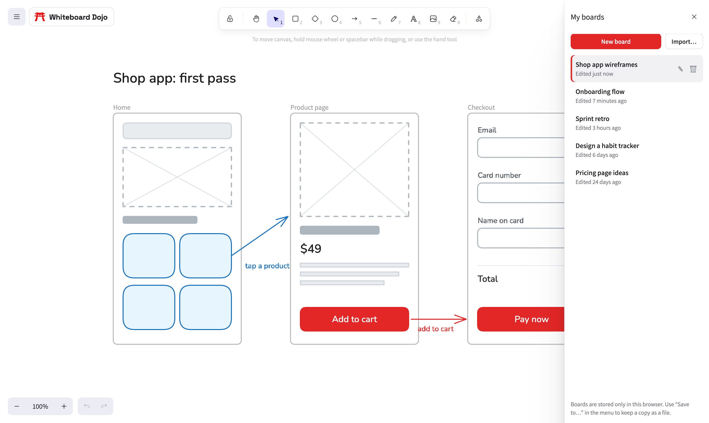

A Private Online Whiteboard: No Account, Nothing Uploaded
Most online whiteboards want an account before you draw a single box, and then they keep everything you make on their servers. That's fine for team boards. It's less fine when you're sketching an unreleased product, mapping out client work, or just thinking out loud and don't want it stored somewhere you can't see.
Whiteboard Dojo works the other way around. There's no account, and your boards never leave your browser.
How it works
When you draw on the board, every change is saved to your browser's own storage on your device. The website itself is just a set of files. There's no server behind it that could receive your drawings, and no database of boards on our side. We couldn't read your boards if we wanted to.
That covers everything on the board: shapes, text, images you drop in, and your shape library. We do use Google Analytics to count visits to the site, the way most websites do. That tells us how many people opened a page. It doesn't include anything you draw.

What you get
- No sign-up. Open the page and start drawing. No email, no password, no trial.
- No board limits. Make as many boards as you want and switch between them from My boards.
- Autosave. Every change is saved as you make it. Close the tab and your board is waiting when you come back.
- Privacy by default. Nothing to leak, because nothing is uploaded.
What you give up
Keeping everything on your device has trade-offs, and it's better to know them up front.
- Your boards live on one device. A board you made on your laptop won't appear on your phone or another browser.
- Clearing your browser data deletes them. If you clear site data or cookies for whiteboarddojo.com, your boards go with it. The same happens when you close a private or incognito window.
- No live collaboration. Two people can't edit the same board at once. To share, you send a file or an image.
If you need real-time teamwork, a cloud tool is the better fit. Our comparison of free Miro alternatives covers the options.
Back up a board in two clicks
For anything you care about, keep a copy as a file. Open the menu, choose Save to…, and you'll download a .excalidraw file with everything on the board, images included. It's a plain file you own, so you can put it in a folder, a cloud drive, or an email to yourself.
To open it again, choose Import board from the menu or from My boards. It comes back as a new board, ready to edit.
Moving to another device
- On the first device, open the board and choose Save to….
- Get the file to the other device however you like: AirDrop, email, a shared folder.
- On the other device, open the whiteboard and choose Import board.
The same file format works in Excalidraw, so you can also open your boards there, or bring Excalidraw drawings here.
Sharing with someone else
If they only need to look, export an image: Export image in the menu gives you a PNG or SVG. If they need to edit, send the .excalidraw file and they can import it. Their copy is their own from then on, so changes won't sync back to you.
Common questions
Can you see my boards?
No. They're stored in your browser and never sent to us.
Is it really free?
Yes. There's no paid plan and no limit on boards.
Is it safe for confidential work?
Your boards don't leave your device, so the risks are the same as any file on your computer. Anyone with access to your browser can open them, and any file you save or send is yours to protect.
What happens if I switch browsers?
Each browser keeps its own boards. Save the ones you need with Save to… and import them in the new browser.